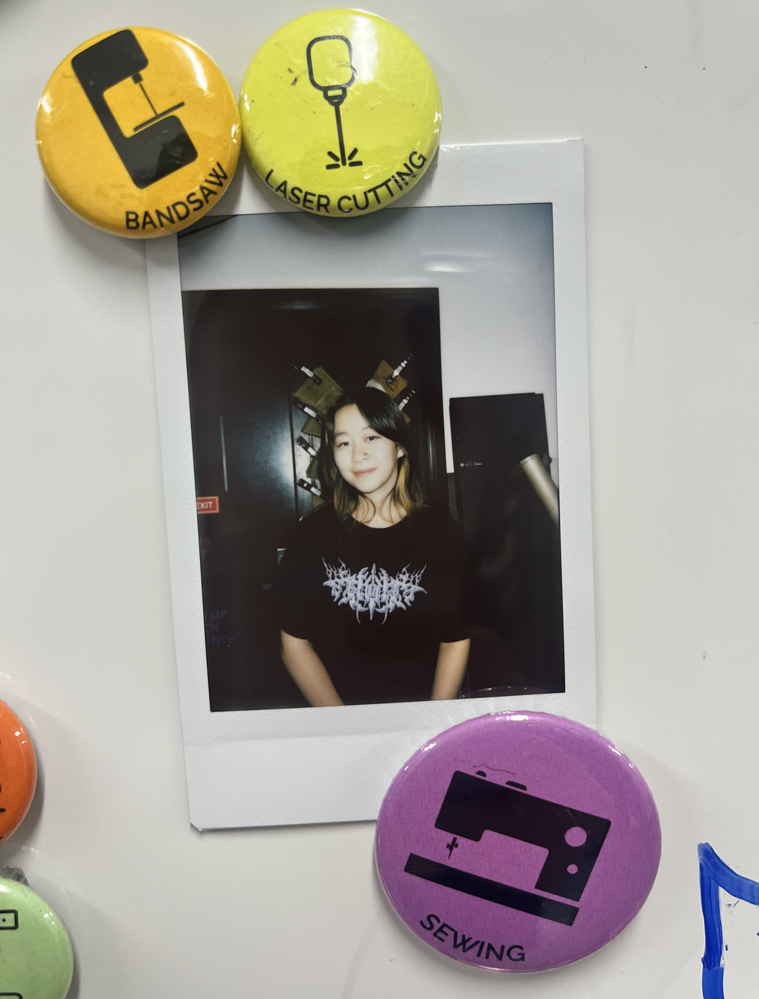

Hello! My name is Gloria Zhu and I'm a student at MIT studying computer science and design.
I want to build a better future by designing thoughtful systems and rethinking existing infrastructures.
Concretely, I am interested in human-computer interaction, creative computation, and interaction design spanning software and hardware interfaces. You can check out my design case studies on my Work page.
When I'm not in a makerspace* or studio, I can be found reading about urban planning, pondering internet culture, or making paper zines.
<-- * My profile at the makerspace I work at!
Experience & Involvements:
Previously, I've interned at:
e Databricks, building networking infrastructure in Golang
b Formlabs, designing and implementing UI/UX flows in C++
k Zoox [Amazon], developing path-planning algorithms for self-driving cars in C++
At MIT, I'm the Design Director of MIT Gala, our undergraduate design and fashion collective.
I also do volunteer design and marketing work for causes I believe in, including Design for America, on-campus advocacy efforts, and community events.
Selected Coursework:
Computing: Interactive Data Visualization, Distributed Systems, Computer Language Engineering, Computation Structures, Design and Analysis of Circuits, Robotics: Science and Systems, Machine Learning, Advances in Computer Vision
Design: Creating Video Games, Objects and Interaction, Creative Coding, Typography and Translation, Photography, History of Design, Understanding Modern Architecture
Skills & Technologies:
Programming:
Javascript, C++, C, Golang, HTML/CSS, Java, Python, Rust, GDScript, C#
Web/Game Frameworks:
React, Svelte, Vue, p5.js, paper.js, three.js, d3.js, Godot
Design Tools: Figma, Adobe Creative Suite, Rhino, TouchDesigner
Engineering Tools: Arduino, Onshape CAD, KiCAD, MATLAB